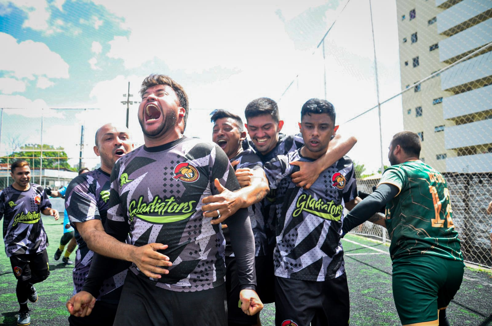
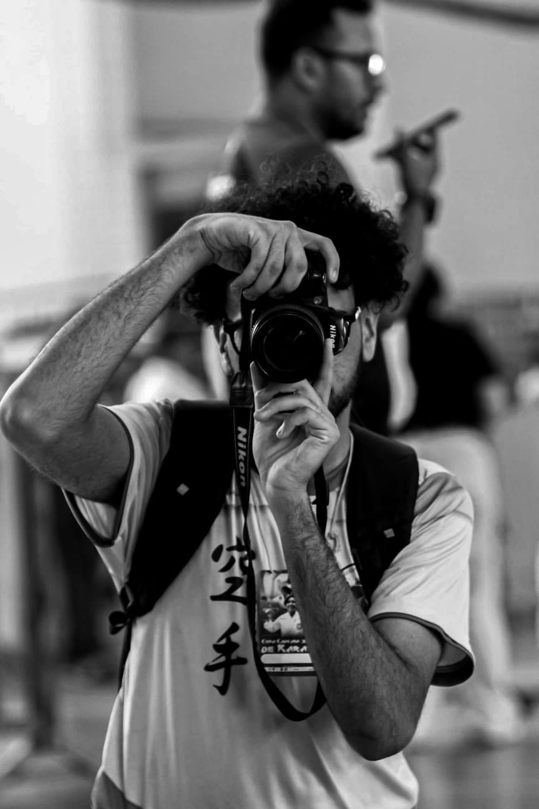

O momento
fica.
Você vive o momento. O trabalho é fazer com que ele continue vivo na imagem.
Explorar portfólio ↘
Cada momento
merece ser bem contado.
Você não precisa apenas de alguém com uma câmera. Precisa de alguém atento ao lance, à reação e àquele segundo que passa rápido demais.
O trabalho está em ler a cena, antecipar o instante certo e transformar o que você viveu em uma imagem que continua transmitindo a mesma sensação depois que tudo terminou.
O trabalho
fala por si.
Uma seleção de momentos já registrados por Gabriel. Clique em qualquer imagem para visualizar a fotografia em tela cheia.
Gostou do resultado? Entre em contato e conte o que você quer registrar.

Gabriel
Rogers.
Gabriel trabalha com um olhar atento ao tempo, à luz e ao movimento. No esporte, o momento decisivo pode durar menos de um segundo; em um ensaio, pode estar em uma expressão; em um evento, pode acontecer enquanto quase todo mundo olha para outro lado.
É esse olhar que transforma um registro comum em uma fotografia que faz você lembrar exatamente do que estava sentindo.
Timing
A melhor foto muitas vezes acontece antes do clique. É preciso ler a cena, antecipar o movimento e reagir rápido sem perder a composição.
Direção
Quando existe pose, a orientação é leve e natural. A ideia não é criar alguém diferente, mas fazer a melhor versão daquela pessoa aparecer.
Memória
Uma boa fotografia não serve apenas para mostrar o que aconteceu. Ela precisa fazer você voltar para aquele momento toda vez que olhar para ela.
Vamos registrar
o próximo momento?
Entre em contato para consultar disponibilidade, orçamento ou solicitar uma galeria.